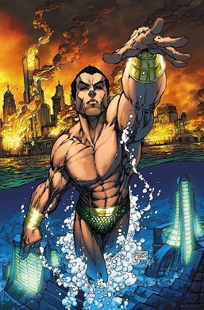

Marvel Comics
Marvel Comics is the brand name and primary imprint of Marvel Worldwide Inc., formerly Marvel Publishing, Inc. and Marvel Comics Group, a publisher of American comic books and related media. In 2009, The Walt Disney Company acquired Marvel Entertainment, Marvel Worldwide's parent company.
Marvel started in 1939 as Timely Comics, and by 1951 had generally become known as Atlas Comics. The Marvel era began in 1961, the year that the company launched The Fantastic Four and other superhero titles created by Steve Ditko, Stan Lee, Jack Kirby and many others. The Marvel brand had been used over the years, but solidified as the company's only brand within a couple of years.
The first modern comic books under the Marvel Comics brand were the science-fiction anthology Journey into Mystery and the teen-humor title Patsy Walker (both cover dated June 1961), which each displayed an "MC" box on its cover. Then, in the wake of DC Comics' success in reviving superheroes in the late 1950s and early 1960s, particularly with the Flash, Green Lantern, and other members of the team the Justice League of America, Marvel followed suit.
In 1961, writer-editor Stan Lee revolutionized superhero comics by introducing superheroes designed to appeal to older readers than the predominantly child audiences of the medium. Modern Marvel's first superhero team, the titular stars of The Fantastic Four (Nov. 1961) broke convention with other comic book archetypes of the time by squabbling, holding grudges both deep and petty, and eschewing anonymity or secret identities in favor of celebrity status. Subsequently, Marvel comics developed a reputation for focusing on characterization and adult issues to a greater extent than most superhero comics before them, a quality which the new generation of older readers appreciated. This applied to The Amazing Spider-Man title in particular, which turned out to be Marvel's most successful book. Its young hero suffered from self-doubt and mundane problems like any other teenager, something with which many readers could identify.
Lee and freelance artist and eventual co-plotter Jack Kirby's Fantastic Four originated in a Cold War culture that led their creators to revise the superhero conventions of previous eras to better reflect the psychological spirit of their age. Eschewing such comic-book tropes as secret identities and even costumes at first, having a monster as one of the heroes, and having its characters bicker and complain in what was later called a "superheroes in the real world" approach, the series represented a change that proved to be a great success.
Marvel often presented flawed superheroes, freaks, and misfits—unlike the perfect, handsome, athletic heroes found in previous traditional comic books. Some Marvel heroes looked like villains and monsters such as the Hulk and the Thing. This naturalistic approach even extended into topical politics.
History
Pulp-magazine publisher Martin Goodman created the company later known as Marvel Comics under the name Timely Publications in 1939. Goodman, who had started with a Western pulp in 1933, was expanding into the emerging—and by then already highly popular—new medium of comic books. Launching his new line from his existing company's offices at 330 West 42nd Street, New York City, he officially held the titles of editor, managing editor, and business manager, with Abraham Goodman (Martin's brother) officially listed as publisher.
Timely's first publication, Marvel Comics #1 (cover dated Oct. 1939), included the first appearance of Carl Burgos' android superhero the Human Torch, and the first appearances of Bill Everett's anti-hero Namor the Sub-Mariner, among other features. The issue was a great success; it and a second printing the following month sold a combined nearly 900,000 copies. While its contents came from an outside packager, Funnies, Inc., Timely had its own staff in place by the following year. The company's first true editor, writer-artist Joe Simon, teamed with artist Jack Kirby to create one of the first patriotically themed superheroes, Captain America, in Captain America Comics #1 (March 1941). It, too, proved a hit, with sales of nearly one million. Goodman formed Timely Comics, Inc., beginning with comics cover-dated April 1941 or Spring 1941.
While no other Timely character would achieve the success of these three characters, some notable heroes—many of which continue to appear in modern-day retcon appearances and flashbacks—include the Whizzer, Miss America, the Destroyer, the original Vision, and the Angel. Timely also published one of humor cartoonist Basil Wolverton's best-known features, "Powerhouse Pepper", as well as a line of children's funny-animal comics featuring characters like Super Rabbit and the duo Ziggy Pig and Silly Seal.
Goodman hired his wife's cousin, Stanley Lieber, as a general office assistant in 1939. When editor Simon left the company in late 1941, Goodman made Lieber—by then writing pseudonymously as "Stan Lee"—interim editor of the comics line, a position Lee kept for decades except for three years during his military service in World War II. Lee wrote extensively for Timely, contributing to a number of different titles.

First Comic

Namor the Sub-Mariner
Namor the Sub-Mariner (Namor McKenzie) is a fictional character appearing in American comic books published by Marvel Comics. Debuting in early 1939, the character was created by writer-artist Bill Everett for Funnies Inc., one of the first "packagers" in the early days of comic books that supplied comics on demand to publishers looking to enter the new medium. Initially created for the unreleased comic Motion Picture Funnies Weekly, the Sub-Mariner first appeared publicly in Marvel Comics #1 (cover-dated Oct. 1939) – the first comic book from Timely Comics, the 1930s–1940s predecessor of the company Marvel Comics. During that period, known to historians and fans as the Golden Age of Comic Books, the Sub-Mariner was one of Timely's top three characters, along with Captain America and the original Human Torch. Everett said the character's name was inspired by Samuel Taylor Coleridge's poem, "The Rime of the Ancient Mariner". Everett came up with "Namor" by writing down noble-sounding names backwards and thought Roman/Namor looked the best.
Publication History
Namor the Sub-Mariner first appeared in April 1939 in the prototype for a planned giveaway comic titled Motion Picture Funnies Weekly, produced by the comic book packager Funnies Inc. The only eight known samples among those created to send to theater owners were discovered in the estate of the deceased publisher in 1974. When the giveaway idea fell through, creator Bill Everett used the character for Marvel Comics #1, the first comic book by Funnies, Inc. client Timely Comics, predecessor of Marvel Comics. The final panel of the earlier, unpublished eight-page Sub-Mariner story had included a "Continued Next Week" box that reappeared, sans lettering, in an expanded 12-page story. The series Marvel Comics was retitled Marvel Mystery Comics with issue #2 (Dec. 1939).
In his first appearances Namor was an enemy of the United States. Comics historian Les Daniels noted that "Namor was a freak in the service of chaos. Although the Sub-Mariner acted like a villain, his cause had some justice, and readers reveled in his assaults on civilization. His enthusiastic fans weren't offended by the carnage he created as he wrecked everything from ships to skyscrapers." Everett's antihero would eventually battle Carl Burgos' android superhero, the Human Torch, when in 1940 Namor threatened to sink the island of Manhattan underneath a tidal wave. When the U.S. entered World War II, Namor would aid the Allies of World War II against Adolf Hitler and the Axis powers. Supporting characters included Betty Dean, a New York City policewoman introduced in Marvel Mystery Comics #3 (and later known as Betty Dean-Prentiss), who was a steady companion, and his cousins Namora and Dorma.
Power And Abilities
Because of his unusual genetic heritage, Namor is unique among both ordinary humans and Atlanteans; he is sometimes referred to as "Marvel's first mutant" because, while the majority of his observed superhuman powers come from the fact that he is a hybrid of human and Atlantean DNA, his ability to fly can't be explained by either side (Atlanteans are an offshoot of "baseline" humanity); though, in terms of in-continuity chronology, there were many mutants in existence before Namor. Namor possesses a fully amphibious physiology suited for extreme undersea pressures, superhuman strength, speed, agility, durability, flight, and longevity. Namor has the ability to survive underwater for indefinite periods, and specially developed vision which gives him the ability to see clearly in the murky depths of the ocean.
Bill Everett, in his first Sub-Mariner story, described the character as "an ultra-man of the deep [who] lives on land and in the sea, flies in the air, [and] has the strength of a thousand [surface] men". No other powers were mentioned. When the series was revived in 1954, Namor lost his ankle wings and with them the power of flight; they, and his full strength, were restored in Sub-Mariner Comics #38 (Feb. 1955), in which Everett additionally wrote a flashback story, "Wings on His Feet", detailing their appearance on Namor at age 14. This story was twice reprinted during the Silver Age of Comic Books, in Marvel Super-Heroes #17 (Nov. 1968), and in the book Comix by Les Daniels.
Namor has the ability to swim at superhuman speeds, even by Atlantean standards.
Namor has greater longevity than a normal human being. He is nearly 100 years old as he was born in 1920 in the Marvel timeline, but has the appearance of a male in his prime. His identity as a pre–World War II superhero is well-established, making him less subject to the sliding timescale of the Marvel universe.
Important Characters
Iron Man
Genius inventor Tony Stark continued his father Howard Stark’s weaponry business after his parents’ untimely deaths and flew it to even greater heights of innovation. While in Afghanistan to demonstrate a new missile for the U.S. military, Stark’s convoy came under fire by a terrorist group known as the Ten Rings and he was severely wounded. Taken prisoner by the group, Stark awoke in their headquarters to learn that shrapnel near his heart had nearly cost him his life, but swift action by scientist and fellow prisoner Ho Yinsen—who had inserted a powerful electromagnet in Stark’s chest—would prolong it temporarily.Know More...

Thor
Born 1500 years ago to Odin and Frigga, the king and queen of fabled Asgard, Thor grew into a mighty warrior and protector of his home and people. Thought to be rash and even reckless by his father, Thor nevertheless looked forward to the day of his ascension to the throne. But, his adoptive brother Loki schemed in private to ensure that day never arrived. He manipulated Thor into attacking the Frost Giants, legendary adversaries of the Asgardians and Loki’s people, and Odin—hoping to teach his son humility—divested Thor of his magic hammer Mjolnir and banished him to Midgard, the realm also known as Earth.Know More...
Spider-Man
A bite from a spider somehow granted teenager Peter Parker its arachnid abilities and instead of using them for personal gain, he decided to help others with them. An orphan living with his aunt, May Parker, the boy chose to wear a mask while fighting crime so as not to burden her with his actions.Calling himself Spider-Man and sporting a pair of web-shooting devices he’d constructed, Parker wound up in internet videos which attracted the attention of Tony Stark.